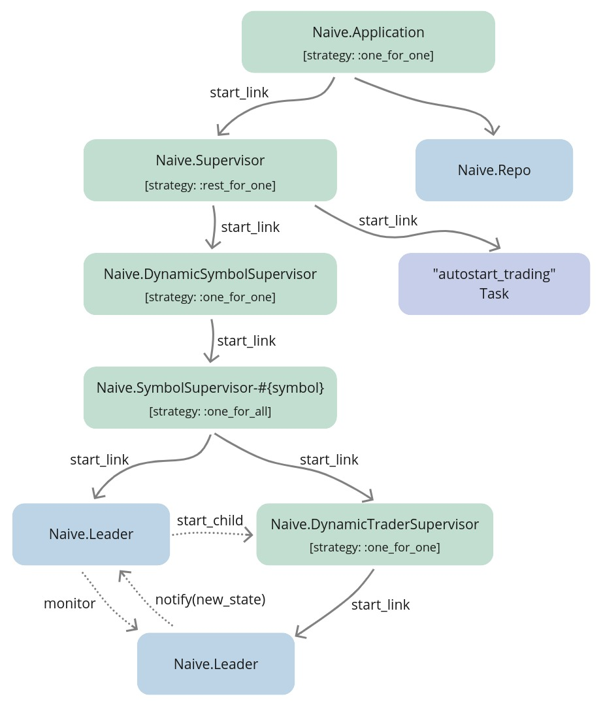
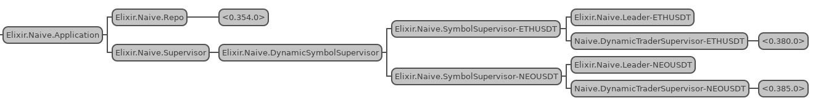

Chapter 12 Start, stop, shutdown and autostart trading
12.1 Objectives
- describe and design the required functionality
- (re-)implement the start trading functionality
- implement the stop trading functionality
- implement the autostart trading functionality
- implement the shutdown trading functionality
- test the implementation
12.2 Describe and design the required functionality
In the 10th chapter, we’ve introduced the Postgres database inside the naive application together with the settings per symbol.
In this chapter, we will progress forward to provide additional trading functionality that will be similar to the functionality implemented in the last chapter for the streaming application:
- stop trading - as the
Naive.SymbolSupervisorprocesses are registered with names that can be easily reverse engineered, we should be able to utilize theProcess.where_is/1function to retrieve the PIDs and instruct theNaive.DynamicSymbolSupervisorto terminate those child processes. Again, we need to put that logic somewhere so we will implement theNaive.DynamicSymbolSupervisoras a full module using theDynamicSupervisorbehavior. - start_trading - as our
Naive.DynamicSymbolSupervisorwill now be a module we will be able to remove thestart_trading/1implementation from theNaivemodule and reimplement it inside theNaive.DynamicSymbolSupervisormodule. It will follow the same pattern of checking for PID, starting theNaive.SymbolSupervisorprocess and flipping thestatusflag inside thesettingstable’s row for that symbol. - shutdown trading - sometimes abruptly stopping trading won’t be the best solution, it would be better to allow the
Naive.Traderprocesses to finish their ongoing trades. To be able to do that we will need to inform theNaive.Leaderprocess assigned to the symbol that the settings for that symbol have been updated and that should cause theNaive.Leaderprocess to withhold starting newNaive.Traderprocesses and terminate the whole tree when the last trader will finish. - autostart trading - this will be a very similar implementation to the one from the last chapter. It will require introducing a new supervisor(we will follow the same naming convention: rename
Naive.Application’s registered process name toNaive.Application, create a new supervisor calledNaive.Supervisor) and utilize theTaskprocess to execute the autostarting logic.

12.3 (Re-)Implement the start trading functionality
To (re-)implement the start_trading/1 functionality we will need to create a new file called
dynamic_symbol_supervisor.ex inside the /apps/naive/lib/naive directory that will use the
DynamicSupervisor behavior. Previously we have been using default DynamicSupervisor implementation(one of the children of the Naive.Application - to be substituted with the below module):
# /apps/naive/lib/naive/dynamic_symbol_supervisor.ex
defmodule Naive.DynamicSymbolSupervisor do # <= module updated
use DynamicSupervisor
require Logger # <= Logger added
import Ecto.Query, only: [from: 2] # <= added for querying
alias Naive.Repo # <= added for querying/updating
alias Naive.Schema.Settings # <= added for querying/updating
def start_link(init_arg) do
DynamicSupervisor.start_link(__MODULE__, init_arg, name: __MODULE__)
end
def init(_init_arg) do
DynamicSupervisor.init(strategy: :one_for_one)
end
endThe above code is a default implementation from the DynamicSupervisor docs with some additional imports, require and aliases as we will use them in this chapter.
Our start_trading/1 implementation is almost the same as one for the streamer application from the last chapter:
# /apps/naive/lib/naive/dynamic_symbol_supervisor.ex
...
def start_trading(symbol) when is_binary(symbol) do
symbol = String.upcase(symbol)
case get_pid(symbol) do
nil ->
Logger.info("Starting trading of #{symbol}")
{:ok, _settings} = update_trading_status(symbol, "on")
{:ok, _pid} = start_symbol_supervisor(symbol)
pid ->
Logger.warn("Trading on #{symbol} already started")
{:ok, _settings} = update_trading_status(symbol, "on")
{:ok, pid}
end
end
...together with additional helper functions:
# /apps/naive/lib/naive/dynamic_symbol_supervisor.ex
defp get_pid(symbol) do
Process.whereis(:"Elixir.Naive.SymbolSupervisor-#{symbol}")
end
defp update_trading_status(symbol, status)
when is_binary(symbol) and is_binary(status) do
Repo.get_by(Settings, symbol: symbol)
|> Ecto.Changeset.change(%{status: status})
|> Repo.update()
end
defp start_symbol_supervisor(symbol) do
DynamicSupervisor.start_child(
Naive.DynamicSymbolSupervisor,
{Naive.SymbolSupervisor, symbol}
)
endBoth implementation and helper functions are almost the same as the ones inside the naive application. It could be tempting to abstract some of the logic away but remember that we should treat all applications in our umbrella project as standalone services that should not share any code if possible(we broke that rule for the TradeEvent struct from the streamer app but we could easily just make a lib with that struct that would be shared between two applications). I would shy away from sharing any business logic between applications in the umbrella project.
There are two additional places where we need to make updates to get our start_trading/1 to work again:
- we need to update the
childrenlist inside theNaive.Application:
# /apps/naive/lib/naive/application.ex
...
children = [
{Naive.Repo, []},
{Naive.DynamicSymbolSupervisor, []} # <= replacement of DynamicSupervisor
]- we need to replace the
start_trading/1implementation inside theNaivemodule todefdelegatemacro(as we don’t have any logic to run there):
# /apps/naive/lib/naive.ex
...
alias Naive.DynamicSymbolSupervisor
defdelegate start_trading(symbol), to: DynamicSymbolSupervisor
...At this moment we are again able to use the Naive.start_trading/1 function to start trading on a symbol (behind the scenes it will use logic from the new Naive.DynamicSymbolSupervisor module).
12.4 Implement the stop trading functionality
Stop trading will require a change in two places, first inside the Naive.DynamicSymbolSupervisor where we will place the termination logic:
# /apps/naive/lib/naive/dynamic_symbol_supervisor.ex
...
def stop_trading(symbol) when is_binary(symbol) do
symbol = String.upcase(symbol)
case get_pid(symbol) do
nil ->
Logger.warn("Trading on #{symbol} already stopped")
{:ok, _settings} = update_trading_status(symbol, "off")
pid ->
Logger.info("Stopping trading of #{symbol}")
:ok =
DynamicSupervisor.terminate_child(
Naive.DynamicSymbolSupervisor,
pid
)
{:ok, _settings} = update_trading_status(symbol, "off")
end
end
...The second change we need to make is to create a forwarding interface using defdelegate inside the Naive module:
That pretty much finishes the stop_trading/1 functionality. We are now able to start and stop(what was previously not available) trading on a symbol.
12.5 Implement the autostart trading functionality
To implement the autostarting we will need to (in a similar fashion as in the last chapter) add a new supervision level that will be dedicated to supervising the Naive.DynamicSymbolSupervisor and the “autostarting” Task.
Let’s create a new file called supervisor.ex inside the /apps/naive/lib/naive directory and (as in the last chapter) we will add the Naive.DynamicSymbolSupervisor and the Task to its children list. We will also update the supervision strategy to :rest_for_one:
# /apps/naive/lib/naive/supervisor.ex
defmodule Naive.Supervisor do
use Supervisor
def start_link(init_arg) do
Supervisor.start_link(__MODULE__, init_arg, name: __MODULE__)
end
def init(_init_arg) do
children = [
{Naive.DynamicSymbolSupervisor, []}, # <= added
{Task, # <= added
fn -> # <= added
Naive.DynamicSymbolSupervisor.autostart_trading() # <= added
end} # <= added
]
Supervisor.init(children, strategy: :rest_for_one) # <= strategy updated
end
endNow we need to swap the Naive.DynamicSymbolSupervisor to Naive.Supervisor in the children list of the Naive.Application, as well as update the registered process’ name of the Naive.Application:
# /apps/naive/lib/naive/application.ex
...
def start(_type, _args) do
children = [
{Naive.Repo, []},
{Naive.Supervisor, []} # <= replacement for DynamicSymbolSupervisor
]
opts = [strategy: :one_for_one, name: Naive.Application] # <= name updatedFinally, we need to implement autostart_trading/0 inside the Naive.DynamicSymbolSupervisor module as our new Task refers to it:
# /apps/naive/lib/naive/dynamic_symbol_supervisor.ex
...
# add the below function after the `init/1` function
def autostart_trading do
fetch_symbols_to_trade()
|> Enum.map(&start_trading/1)
end
...
# and this helper at the end of the module
defp fetch_symbols_to_trade do
Repo.all(
from(s in Settings,
where: s.status == "on",
select: s.symbol
)
)
end
...Those are the same (excluding updated function names) as inside the streamer application. We are fetching enabled symbols and starting new Naive.SymbolSupervisor processes for each one.
At this moment we can already see our implementation in action:

At this moment we are able to test the current implementation inside the IEx:
$ iex -S mix
...
iex(1)> Naive.start_trading("ethusdt")
21:35:30.207 [info] Starting trading of ETHUSDT
21:35:30.261 [info] Starting new supervision tree to trade on ETHUSDT
{:ok, #PID<0.372.0>}
21:35:33.344 [info] Initializing new trader(1612647333342) for ETHUSDT
iex(3)> Naive.start_trading("neousdt")
21:35:54.128 [info] Starting trading of NEOUSDT
21:35:54.169 [info] Starting new supervision tree to trade on NEOUSDT
{:ok, #PID<0.383.0>}
21:35:56.007 [info] Initializing new trader(1612647356007) for NEOUSDT
21:38:07.699 [info] Stopping trading of NEOUSDT
{:ok,
%Naive.Schema.Settings{
...
}}We can now exit the IEx and start a new one:
$ iex -S mix
...
21:39:16.894 [info] Starting trading of ETHUSDT
21:39:16.938 [info] Starting new supervision tree to trade on ETHUSDT
21:39:18.786 [info] Initializing new trader(1612647558784) for ETHUSDT
iex(1)>The above logs confirm that the naive application autostarts the previously enabled symbols(using the start_trading/1 function) as well as stop_trading/1 updates the status inside the database (so the symbol isn’t autostarted at the next initialization).
12.6 Implement the shutdown trading functionality
Last but not least, we will move on to the shutdown_trading/1 functionality. Let’s start with the simplest part which is delegating the function call to the Naive.DynamicSymbolSupervisor module from the Naive module(interface):
# /apps/naive/lib/naive.ex
...
defdelegate shutdown_trading(symbol), to: DynamicSymbolSupervisor
...Next, we will create a shutdown_trading/1 function inside the Naive.DynamicSymbolSupervisor module where we will check is there any trading going on for that symbol(the same as for start/stop), and in case of trading happening we will inform the Naive.Leader process handling that symbol that settings have been updated:
# /apps/naive/lib/naive/dynamic_symbol_supervisor.ex
...
def shutdown_trading(symbol) when is_binary(symbol) do
symbol = String.upcase(symbol)
case get_pid(symbol) do
nil ->
Logger.warn("Trading on #{symbol} already stopped")
{:ok, _settings} = update_trading_status(symbol, "off")
_pid ->
Logger.info("Shutdown of trading on #{symbol} initialized")
{:ok, settings} = update_trading_status(symbol, "shutdown")
Naive.Leader.notify(:settings_updated, settings)
{:ok, settings}
end
end
...The crucial part of the implementation above is the notify(:settings_updated, settings) where we inform the Naive.Leader process that it needs to update trading settings.
Currently, the Naive.Leader module does not support updating the settings after startup - let’s add a new interface function together with a callback function that will handle settings updating:
# /apps/naive/lib/naive/leader.ex
...
# add the below function as the last clause of the `notify` function
def notify(:settings_updated, settings) do
GenServer.call(
:"#{__MODULE__}-#{settings.symbol}",
{:update_settings, settings}
)
end
# add the below handler function as the last clause of `handle_call` function
def handle_call(
{:update_settings, new_settings},
_,
state
) do
{:reply, :ok, %{state | settings: new_settings}}
endOk, we have a way to update the settings of the Naive.Leader process “on the go” but what effects should the shutdown state have on the Naive.Leader’s actions?
There are two places that require modification:
- whenever the
Naive.Traderprocess will finish the trade cycle,Naive.Leaderprocess should not start a new one, as well as check, was that the last trader process and if that was the case it needs to call theNaive.stop_trading/1function with its symbol to terminate whole supervision tree for that symbol - whenever the
Naive.Leaderprocess will receive arebuynotification, it should just ignore it when the symbol is in theshutdownstate.
Let’s look at the updated implementation of the “end of trade” handler:
# /apps/naive/lib/naive/leader.ex
...
def handle_info(
{:DOWN, _ref, :process, trader_pid, :normal},
%{traders: traders, symbol: symbol, settings: settings} = state
) do
Logger.info("#{symbol} trader finished trade - restarting")
case Enum.find_index(traders, &(&1.pid == trader_pid)) do
nil ->
Logger.warn(
"Tried to restart finished #{symbol} " <>
"trader that leader is not aware of"
)
if settings.status == "shutdown" and traders == [] do # <= additional check
Naive.stop_trading(state.symbol)
end
{:noreply, state}
index ->
new_traders =
if settings.status == "shutdown" do # <= refactored code
Logger.warn(
"The leader won't start a new trader on #{symbol} " <>
"as symbol is in the 'shutdown' state"
)
if length(traders) == 1 do
Naive.stop_trading(state.symbol)
end
List.delete_at(traders, index)
else
new_trader_data = start_new_trader(fresh_trader_state(settings))
List.replace_at(traders, index, new_trader_data)
end
{:noreply, %{state | traders: new_traders}}
end
end
...As visible in the above code, whenever the Naive.Trader process will finish the trade cycle, the Naive.Leader process will check can it find a record of that trader in its state (no changes here). We will modify the callback so the leader process will check the settings.status. In the shutdown status it checks wheater it was the last trader in the traders list, to terminate the whole tree at that time(using the Naive.stop_trading/1 function).
The second callback that we need to modify is the rebuy triggered:
# /apps/naive/lib/naive/leader.ex
...
def handle_call(
{:rebuy_triggered, new_trader_state},
{trader_pid, _},
%{traders: traders, symbol: symbol, settings: settings} = state
) do
case Enum.find_index(traders, &(&1.pid == trader_pid)) do
nil ->
Logger.warn("Rebuy triggered by trader that leader is not aware of")
{:reply, :ok, state}
index ->
old_trader_data = Enum.at(traders, index)
new_trader_data = %{old_trader_data | :state => new_trader_state}
updated_traders = List.replace_at(traders, index, new_trader_data)
updated_traders =
if settings.chunks == length(traders) do
Logger.info("All traders already started for #{symbol}")
updated_traders
else
if settings.status == "shutdown" do
Logger.warn(
"The leader won't start a new trader on #{symbol} " <>
"as symbol is in the 'shutdown' state"
)
updated_traders
else
Logger.info("Starting new trader for #{symbol}")
[start_new_trader(fresh_trader_state(settings)) | updated_traders]
end
end
{:reply, :ok, %{state | :traders => updated_traders}}
end
end
...In the above rebuy_triggered handler function we added branching on the settings.status and we simply ignore the rebuy notification when the symbol is in the shutdown status.
The final change will be to create a new migration that will update the TradingStatusEnum to have a shutdown option:
$ cd apps/naive
$ mix ecto.gen.migration update_trading_status
* creating priv/repo/migrations/20210205232303_update_trading_status.exsInside the generated migration file we need to excute a raw SQL command:
# /apps/naive/priv/repo/migrations/20210205232303_update_trading_status.exs
defmodule Naive.Repo.Migrations.UpdateTradingStatus do
use Ecto.Migration
@disable_ddl_transaction true
def change do
Ecto.Migration.execute "ALTER TYPE trading_status ADD VALUE IF NOT EXISTS 'shutdown'"
end
endWe need to apply the same change to the Naive.Schema.TradingStatusEnum:
# /apps/naive/lib/naive/schema/trading_status_enum.ex
import EctoEnum
defenum(Naive.Schema.TradingStatusEnum, :trading_status, [:on, :off, :shutdown])Don’t forget to run mix ecto.migrate to run the new migration.
We can now test the shutdown_trading/1 functionality inside the IEx:
$ iex -S mix
...
iex(1)> Streamer.start_streaming("ethusdt")
21:46:26.651 [info] Starting streaming on ETHUSDT
{:ok, #PID<0.372.0>}
iex(2)> Naive.start_trading("ethusdt")
21:46:42.830 [info] Starting trading of ETHUSDT
21:46:42.867 [info] Starting new supervision tree to trade on ETHUSDT
{:ok, #PID<0.379.0>}
21:46:44.816 [info] Initializing new trader(1612648004814) for ETHUSDT
...
21:47:52.448 [info] Rebuy triggered for ETHUSDT by the trader(1612648004814)
...
21:49:58.900 [info] Rebuy triggered for ETHUSDT by the trader(1612648089409)
...
21:50:58.927 [info] Rebuy triggered for ETHUSDT by the trader(1612648198900)
...
21:53:27.202 [info] Rebuy triggered for ETHUSDT by the trader(1612648326215)
21:53:27.250 [info] Rebuy triggered for ETHUSDT by the trader(1612648325512)
21:53:27.250 [info] All traders already started for ETHUSDT
# at this moment we have 5 `Naive.Trader` processes trading in parallel
iex(4)> Naive.shutdown_trading("ethusdt")
21:55:01.556 [info] Shutdown of trading on ETHUSDT initialized
{:ok,
%Naive.Schema.Settings{
...
}}
...
22:06:58.855 [info] Trader(1612648407202) finished trade cycle for ETHUSDT
22:06:58.855 [info] ETHUSDT trader finished trade - restarting
22:06:58.855 [warn] The leader won't start a new trader on ETHUSDTas symbol is in
shutdown state
22:07:50.768 [info] Trader(1612648325512) finished trade cycle for ETHUSDT
22:07:50.768 [info] ETHUSDT trader finished trade - restarting
22:07:50.768 [warn] The leader won't start a new trader on ETHUSDTas symbol is in
shutdown state
22:07:50.857 [info] Trader(1612648326215) finished trade cycle for ETHUSDT
22:07:50.857 [info] ETHUSDT trader finished trade - restarting
22:07:50.857 [warn] The leader won't start a new trader on ETHUSDTas symbol is in
shutdown state
22:07:51.079 [info] Trader(1612648089409) finished trade cycle for ETHUSDT
22:07:51.079 [info] ETHUSDT trader finished trade - restarting
22:07:51.079 [warn] The leader won't start a new trader on ETHUSDTas symbol is in
shutdown state
22:08:05.401 [info] Trader(1612648004814) finished trade cycle for ETHUSDT
22:08:05.401 [info] ETHUSDT trader finished trade - restarting
22:08:05.401 [warn] The leader won't start a new trader on ETHUSDTas symbol is in
shutdown state
22:08:05.401 [info] Stopping trading of ETHUSDTAs we can see from the logs above, our naive strategy grown from 1 to 5 Naive.Trader processes running in parallel, then we called the shutdown_trading/1 function. In the shutdown status, the Naive.Leader process ignored rebuy notifications and wasn’t starting any new Naive.Trader processes as the old ones were finishing. At the moment when the last Naive.Trader process finished the trade cycle, the Naive.Leader called stop_trading/1 on “it’s” symbol, terminating the whole supervision tree for that symbol.
[Note] Please remember to run the mix format to keep things nice and tidy.
Source code for this chapter can be found at Github